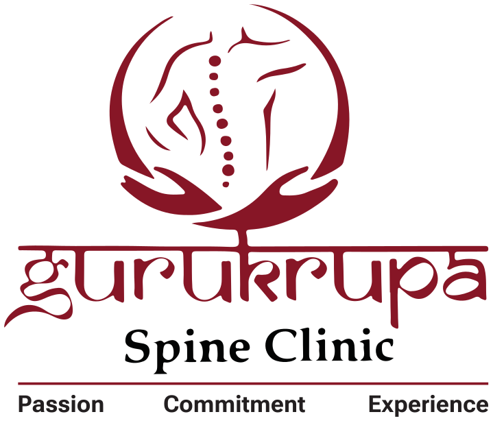
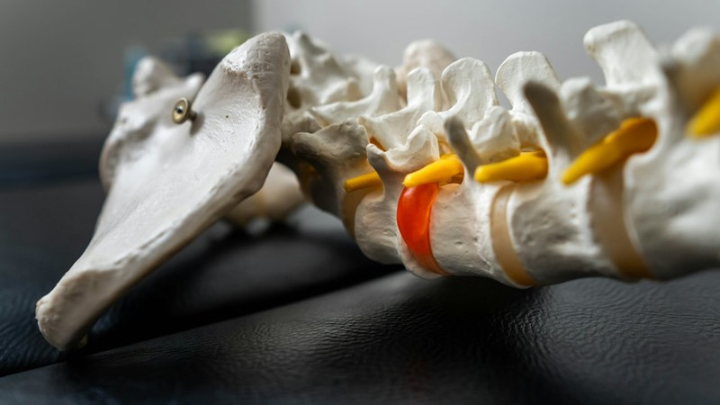
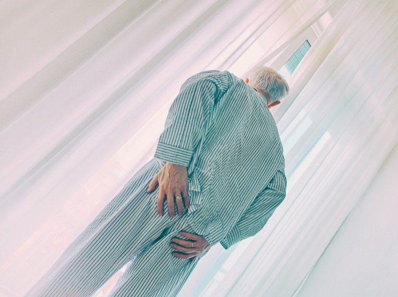
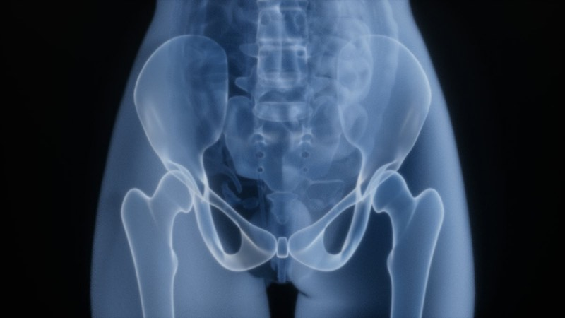
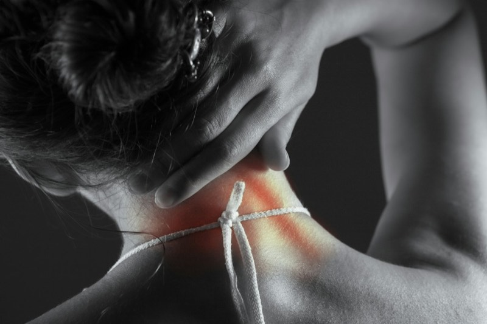
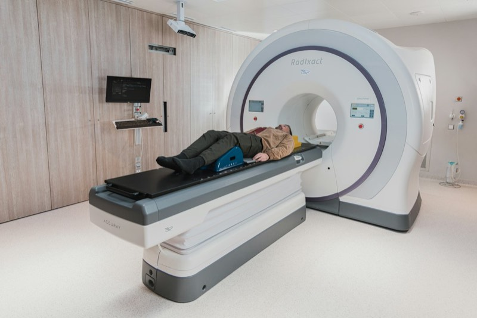

Pain That Travels Down Your Leg
A sharp, burning, or shooting pain from your lower back into your leg may be associated with sciatica or nerve compression.
Expert Spine Care | Pune & Mumbai
Discover your treatment options — including advanced endoscopic spine surgery.
Living with persistent back pain, shooting leg pain, or difficulty walking can affect your work, sleep, and everyday activities. The good news? Not every spine problem requires major surgery.
Dr. Pramod V. Lokhande brings over 24 years of dedicated spine surgery experience, helping patients understand their condition and explore appropriate treatment options. From non-surgical care to advanced full endoscopic spine surgery, your treatment begins with one priority: finding the right solution for your spine.

Understanding Your Pain
You may recognize some of these experiences.
A sharp, burning, or shooting pain from your lower back into your leg may be associated with sciatica or nerve compression.
Do you need to stop and rest after walking a short distance? Certain spinal conditions can affect the nerves involved in walking.
Persistent tingling, altered sensation, or weakness in your arms or legs may indicate a problem requiring medical evaluation.
If medication, physiotherapy, or other treatments have not provided sufficient relief, it may be time to review your diagnosis and treatment plan.
Many patients worry about surgical risks, recovery time, and returning to their normal lives. Understanding your options is the first step toward making an informed decision.

Advanced fellowship training
Meet Your Spine Specialist
Experience. Precision. Patient-Centered Care.
With over 24 years dedicated to spine surgery, Dr. Pramod V. Lokhande specializes in full endoscopic and minimally invasive spine procedures. His experience includes the evaluation and treatment of conditions affecting the cervical, thoracic, and lumbar spine.
He has performed more than 5,000 spine surgeries and pursued advanced fellowship training in five countries: South Korea, Germany, France, Switzerland, and Japan.
Dr. Lokhande has also contributed to surgical education through conference lectures, live surgical demonstrations, and training workshops for orthopedic surgeons and neurosurgeons. His clinical approach begins with understanding the patient’s condition, symptoms, medical history, and treatment goals.
Your Health Comes First
And not every patient needs the same treatment.
Many spine conditions can initially be managed with appropriate non-surgical treatment. Depending on your diagnosis, this may include medication, physiotherapy, exercise-based rehabilitation, or other specialist-recommended interventions.
When symptoms persist, neurological problems develop, or imaging reveals a condition that may benefit from surgery, an operation may become an appropriate option.
Review your symptoms, medical history, examination findings, and relevant imaging.
Discuss available treatment choices, including non-surgical care where appropriate.
Consider surgical treatment only when the expected benefits justify the risks.
Provide guidance on rehabilitation, follow-up, and returning to daily activities.
The goal is not simply to perform surgery. The goal is to help you make the right decision for your spine health.
Book a Spine ConsultationAdvanced Spine Treatment
Understanding Full Endoscopic Spine Surgery
Full endoscopic spine surgery is a minimally invasive technique used to treat selected spinal conditions. The surgeon uses a small camera called an endoscope, along with specialized surgical instruments, to access and treat the affected area.
The camera provides a magnified view of the surgical site, allowing the surgeon to work through a relatively small incision. For appropriately selected patients, this approach may reduce disruption to surrounding tissues compared with some traditional open procedures.
Many endoscopic procedures can be performed through a small surgical opening.
Specialized instruments allow access to the affected area while limiting disruption to surrounding muscles and tissues.
A high-definition endoscope provides a magnified view of the surgical area.
Selected patients may be discharged on the same day or after a short hospital stay.
Depending on the procedure and individual recovery, some patients may begin walking shortly after surgery.
Recovery depends on the condition treated, procedure performed, overall health, and rehabilitation requirements.
No.
Not every spinal condition can be treated effectively through an endoscopic approach. Some patients may benefit more from other minimally invasive procedures, traditional surgery, or non-surgical treatment.
A specialist evaluation is essential before selecting the treatment.
Discuss Your SymptomsSpine Conditions
Dr. Lokhande evaluates and treats a wide range of spinal conditions.

A slipped or herniated disc occurs when disc material extends beyond its normal position and may irritate or compress nearby nerves.
Sciatica describes pain associated with irritation or compression of nerves that travel from the lower back into the leg.

Spinal stenosis occurs when spaces within the spine become narrowed, potentially compressing spinal nerves.

Spondylolisthesis occurs when one vertebra slips relative to another.

Conditions affecting discs in the neck can cause pain or nerve-related symptoms.

Dr. Lokhande’s clinical experience also includes the evaluation and surgical management of selected spinal infections, tumors, and deformities.
These conditions require individualized assessment and may involve multidisciplinary care.
An accurate diagnosis is the first step toward selecting appropriate treatment.
Understanding Your Options
Both approaches have important roles in spine treatment. The most appropriate technique depends on your diagnosis, anatomy, medical condition, and surgical goals.
| Aspect | Full Endoscopic Surgery | Traditional Open Surgery |
|---|---|---|
| Surgical access | Small incision with specialized instruments. | Larger exposure may be required. |
| Visualization | High-definition endoscopic camera. | Direct surgical view, sometimes assisted by magnification. |
| Tissue disruption | Often reduced for suitable procedures. | Depends on the procedure and surgical approach. |
| Hospital stay | May be shorter in selected patients. | Varies according to surgical complexity. |
| Recovery | Can allow earlier mobilization in appropriate cases. | Depends on the condition and operation. |
| Suitability | Selected conditions and procedures. | May be necessary for complex conditions requiring wider exposure, reconstruction, or stabilization. |
There is no single technique that is best for every patient. The right choice depends on achieving the required treatment safely and effectively.
Experience Beyond the Operating Room
Dr. Pramod Lokhande’s work extends beyond clinical practice. He participates in surgical education, sharing his knowledge of endoscopic spine techniques with orthopedic surgeons and neurosurgeons.
Advanced spine training in South Korea, Germany, France, Switzerland, and Japan.
Invited lectures and educational presentations on advanced spine surgery techniques.
Teaching surgical techniques through demonstrations and educational programs.
Hands-on training in endoscopic approaches, including interlaminar and transforaminal techniques.
For Orthopedic Surgeons and Neurosurgeons
Explore Dr. Lokhande’s educational activities, workshops, and professional training opportunities.
What to Expect
Share your contact information, preferred consultation location, and main concern.
Discuss your symptoms, medical history, previous treatment, and current difficulties.
Your doctor may review existing MRI or other imaging and recommend further investigations if necessary.
Receive an explanation of your diagnosis and available treatment choices.
If surgery is recommended, discuss the expected benefits, risks, alternatives, costs, and recovery plan before deciding.
Receive appropriate follow-up guidance and recommendations for recovery.
Your health. Your questions. An informed decision.
Book a Spine ConsultationLearn from the Specialist
Understand why pain travels from the lower back into the leg.
Learn why many patients can improve without an operation.
See how the technique works and understand its potential advantages.
Learn about the factors that influence recovery and rehabilitation.
Understand the information you should have before consenting to treatment.
Your Questions Answered
No. Many people with disc herniation improve with non-surgical treatment. Surgery may be considered when symptoms remain severe, neurological problems develop, or conservative treatment is unsuccessful.
It is a minimally invasive surgical technique that uses a small camera and specialized instruments to treat selected spinal conditions through a small incision.
Endoscopic spine surgery is an established technique for selected conditions. However, every operation carries risks, including infection, bleeding, nerve injury, persistent symptoms, or the need for further surgery. Your surgeon will explain the risks relevant to your condition.
Some patients with sciatica caused by a herniated disc or other forms of nerve compression may be suitable for endoscopic decompression. The decision depends on clinical examination and imaging.
Some patients can begin walking on the day of surgery. However, this depends on the procedure, their medical condition, and the surgeon’s instructions.
Selected endoscopic procedures may allow same-day or next-day discharge. Other procedures may require a longer stay.
No treatment can guarantee complete pain relief. Outcomes depend on the cause of pain, duration of symptoms, nerve health, procedure, and other individual factors.
You may request a specialist consultation to understand whether other treatment approaches are appropriate. An alternative technique is not necessarily better or suitable in every case.
Yes. Bring your MRI report, available images, previous prescriptions, and relevant medical records to your consultation.
The cost depends on the diagnosis, hospital, procedure, medical requirements, and other factors. A treatment estimate can be discussed after clinical evaluation.
Consultation arrangements are available in Pune and Mumbai. Please contact the appointment team for verified clinic locations and schedules.
New loss of bladder or bowel control, numbness around the groin or saddle area, or rapidly worsening limb weakness requires urgent medical evaluation. Do not wait for a routine appointment.
Take the Next Step
Persistent back pain, sciatica, or difficulty walking can leave you uncertain about what to do next. A specialist consultation can help you understand your diagnosis, available treatments, and whether surgery may be appropriate.
Consult Dr. Pramod V. Lokhande to discuss your symptoms and treatment options.
Your enquiry has been received.
Our team will contact you using the details provided to discuss appointment availability.
If you are experiencing a medical emergency, please seek immediate medical attention.
Jupiter Hospital, Pune, Maharashtra
Full address, department and consultation schedule to be confirmed.
Clinic or hospital details to be confirmed.